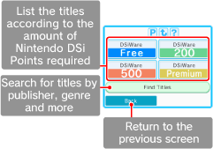

Touch the DSiWARE logo on the Nintendo DSi Shop Main Menu to display the Nintendo DSiWare Menu. Then touch the button that corresponds to the category you wish to view.

●Find Titles by Category
Touch FIND TITLES on the Nintendo DSiWare Menu to display the Find Titles Screen. Then touch the button that corresponds to the search you wish to perform.